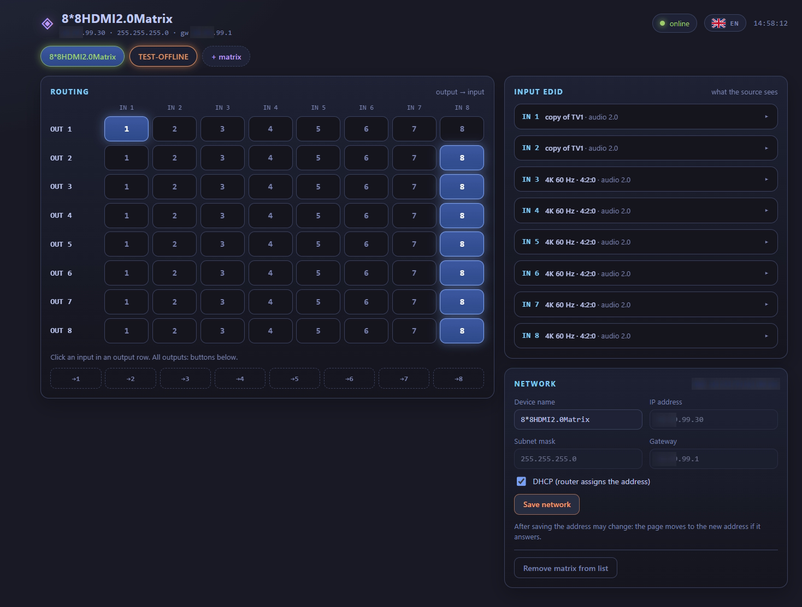
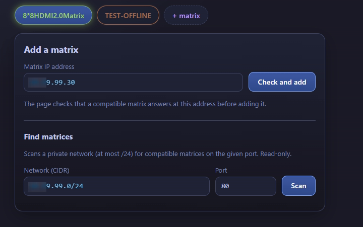
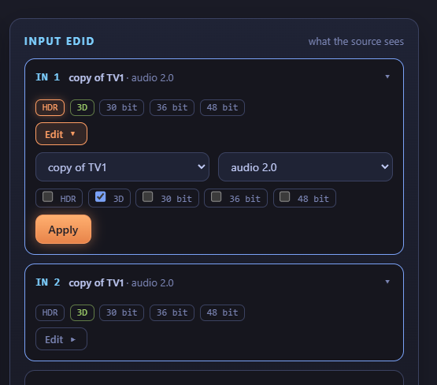
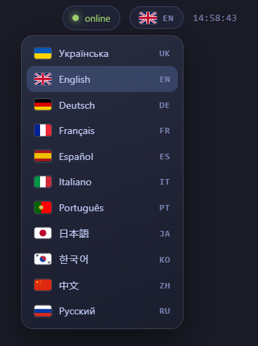

A standalone micro-service for managing HDMI matrix switchers in local networks only. Окремий мікросервіс для керування HDMI-матрицями лише в локальних мережах.
A fast single-page web UI, a standalone micro-service for network-controlled HDMI 8×8 matrix switchers such as the ZENTY ZT-MT88A. Built as a replacement for the device's built-in web interface, which works but is hard to use. For local networks only. Швидкий односторінковий веб-інтерфейс, окремий мікросервіс для HDMI-матриць 8×8 з керуванням по мережі, наприклад ZENTY ZT-MT88A. Створений як заміна вбудованого веб-інтерфейсу пристрою, який працює, але незручний. Лише для локальних мереж.




A micro-service that runs next to your matrices on a local network and gives you one page to route inputs, set EDID and configure the device.Мікросервіс, який працює поруч із вашими матрицями в локальній мережі і дає одну сторінку, щоб перемикати входи, налаштовувати EDID і пристрій.
Routing, EDID and network settings for the selected matrix are visible together, without switching between pages.Маршрутизація, EDID і мережеві налаштування вибраної матриці видно разом, без перемикання сторінок.
Add as many as you need. Each is identified by its MAC address, so changing an IP keeps its settings.Додавайте скільки потрібно. Кожна ідентифікується за MAC-адресою, тож зміна IP не скидає налаштування.
Scan a private /24 on any port for compatible devices. The scan only reads; it never switches anything.Скануйте приватну /24 на будь-якому порту. Скан лише читає й нічого не перемикає.
Each tab shows whether its matrix is reachable. Unreachable matrices are marked clearly.Кожна вкладка показує, чи доступна її матриця.
One small Go binary in a container serves the page and proxies requests to your matrices. Nothing leaves your network.Один невеликий бінарник Go у контейнері віддає сторінку і проксує запити до ваших матриць. Нічого не виходить за межі вашої мережі.
Static HTML, CSS and ES modules. No build step, no framework, no external CDN.Статичні HTML, CSS і ES-модулі. Без збірки, фреймворків і зовнішніх CDN.
You need Docker with the Compose plugin and a matrix reachable on your network.Потрібні Docker з плагіном Compose і матриця, доступна у вашій мережі.
curl -fsSLO https://raw.githubusercontent.com/mr-addams/hdmi-matrix-web-controller/main/install.sh
bash install.sh # downloads compose.yaml, writes .env, pulls the image, starts itOpen http://127.0.0.1:8080, sign in, and add a matrix by its IP address.Відкрийте http://127.0.0.1:8080, увійдіть і додайте матрицю за IP-адресою.
Security: matrices have no authentication for their web API. Keep them on a trusted network, change the default page password, and read the security notes in the README before publishing the page on your LAN.Безпека: матриці не мають автентифікації для веб-API. Тримайте їх у довіреній мережі, змініть типовий пароль сторінки й прочитайте розділ безпеки в README, перш ніж публікувати сторінку в локальній мережі.
The micro-service was built and tested against the device below. Discovery accepts only devices that answer like it does.Мікросервіс створено і перевірено на пристрої нижче. Пошук приймає лише пристрої, які відповідають так само.
| DeviceПристрій | StatusСтатус | NotesПримітки |
|---|---|---|
| ZENTY ZT-MT88A (ZT-115) | TestedПеревірено |
8×8 HDMI 2.0 matrix, HTTP API on port 80, device name 8*8HDMI2.0Matrix, firmware 1.04.
Матриця 8×8 HDMI 2.0, HTTP API на порту 80, назва пристрою 8*8HDMI2.0Matrix, прошивка 1.04.
|
| Similar 8×8 HDMI matrices, for example Monoprice Blackbird 4K 8×8 or OREI UHD-808 Схожі HDMI-матриці 8×8, наприклад Monoprice Blackbird 4K 8×8 або OREI UHD-808 | Not testedНе перевірено | Other vendors use other control protocols. The discovery step will not recognise them, so they are not supported. Інші виробники використовують інші протоколи керування. Пошук їх не розпізнає, тож вони не підтримуються. |
ZENTY and ZT-MT88A are trademarks of their owner. This project is not affiliated with the vendor.ZENTY і ZT-MT88A — торгові марки їхнього власника. Проєкт не пов'язаний з виробником.